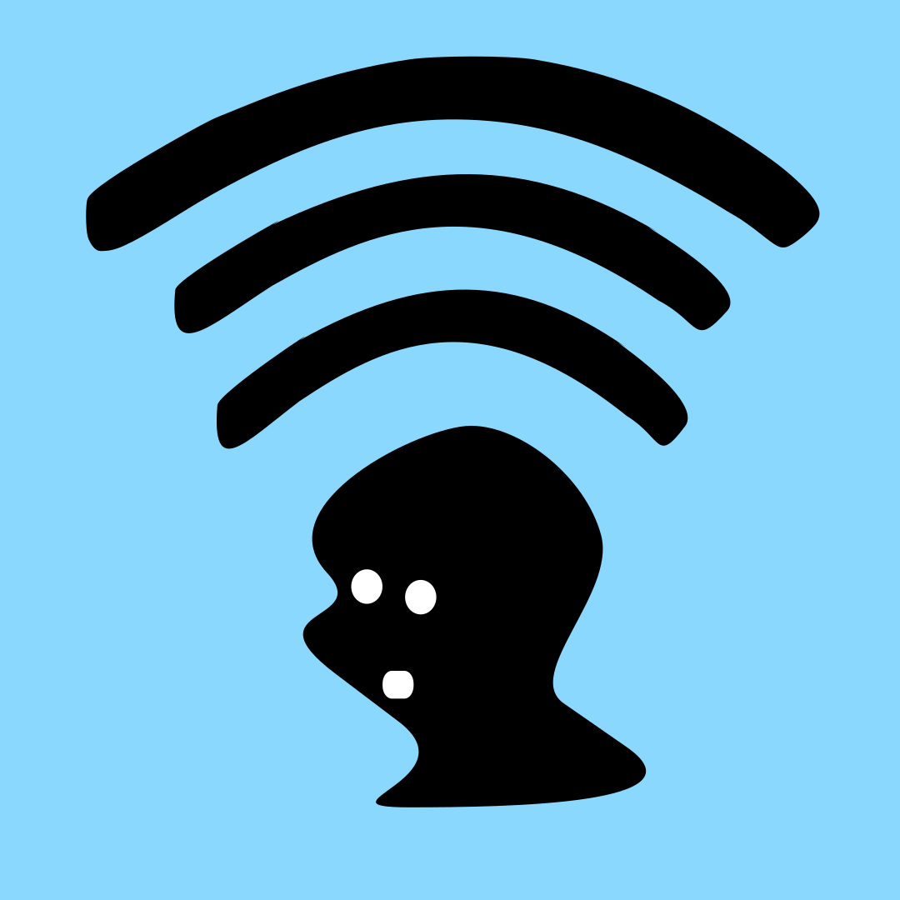
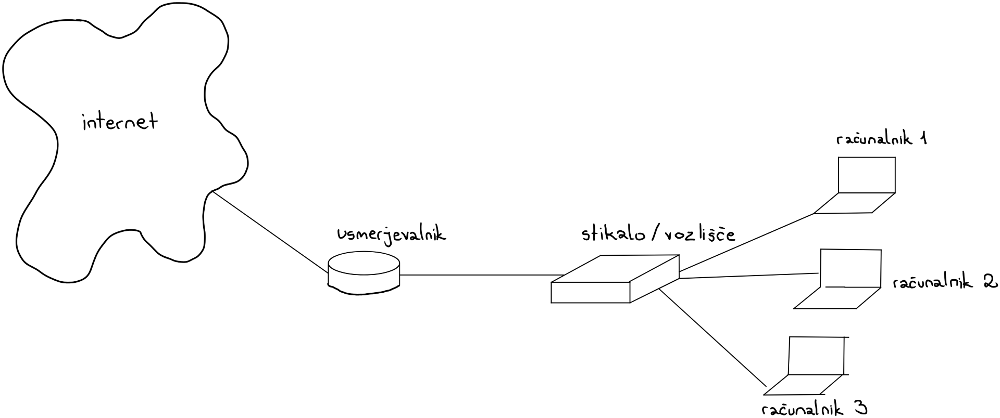

Denimo, da smo v našem domačem omrežju. Naprave, ki se navadno tu ponavljajo so računalniki, telefoni ipd. ter naprave kot so stikala, vozlišča in usmerjevalniki. Strežnik je računalnik.
Vozlišča in stikala so si zelo podobna. Razlika je, da je stikalo “bolj pametno”. Dandanes se uporabljajo večinoma stikala. Njihova funkcija je povezava več končnih naprav v eno povezavo (navadno usmerjevalnik). Usmerjevalniki povezujejo več lokalnih oziroma prostoranih omrežij med seboj. Kot pove ime, naprava paketke usmerja proti svojemu cilju.
Najpogosteje se uporablja usmerjevalnik za povezavo v internet medtem ko stikalo uporabljamo za povezavo naprav v omrežju med sabo.

Naprave lahko med seboj povezujemo na različne načine. Lahko uporabimo žično povezavo, ki se vzpostavi z omrežnim kablom.
Po kablu potuje električni tok, katerega računalnik potem prevede v vrednosti.
Lahko se povežemo preko brezžične povezave kot je npr. Wi-fi ali pa bluetooth. Za prenos podatkov uporablja elektromagnetno valovanje,
katero računalnik sprejme in spremeni v vrednosti.
Obstaja tudi optična povezava, ki za prenos podatkov uporablja svetlobo. Ta se najpogosteje uporablja v prostranih omrežjih.
Žarki potujejo po stekleni cevki. Ker žarki niso občutljivi na elektromagnetne motnje, je ta povezava zelo zanesljiva.
(Anželj idr., 2015)
Naprave v omrežju lahko med sabo komunicirajo na različne načine. Paketke lahko pošiljajo le eni napravi v omrežju. Temu rečemo “unicast”. Lahko sporočila pošilja večim napravam v omrežju, čemur rečemo “multicast”. Če sporočila pošiljamo vsem napravam v omrežju, temu rečemo “broadcast”.
(Omejec, 2015)